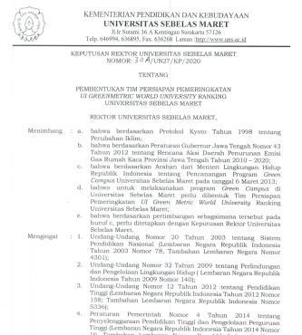
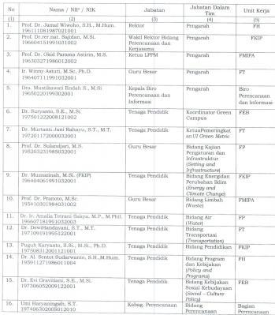

In the new era of democratic Indonesia, public and political support is necessary for effective implementation of policies and programs to achieve SDGs. Through rigorous and independent studies, universities play a strategic role to enhance the credibility of such policies. Center for Sustainable Development Goals Studies (SDGs Center) of Universitas Padjadjaran seeks to play that strategic role to help Indonesia achieve SDGs in 2030.SDGs center of Universitas Padjadjaran is a venue for multi-disciplinary research related to SDGs at the global, national and local scale. It serves to facilitate sharing of SDGs-related research findings from both the university and its partners. It also facilitates capacity building to enhance the analytical capacity of academic community and policy makers from national and local level to conduct SDGs related analysis. Our Vision is Indonesia achieving SDGs in 2030. Our Mission: Providing evidence-based policy recommendations to achieve SDGs, Independently monitoring progress of SDGs, Mainstreaming SDGs into research and policies, Facilitating dialogues to achieve SDGs. Our Main Activities include: Independent studies, Publications, Conferences, workshops, seminars, Trainings, Research collaboration, networking and facilitation.
Number of dedicated staff members assigned to the unit or office responsible for coordinating sustainability initiatives on campus: 20 people
Complete text of the website is available on this link: https://sdgcenter.unpad.ac.id/
| Sustainability Coordination Units & Offices - Benchmarks |
|---|
| Universitas Sebelas Maret (UNS) Examples |
|
  Examples of university leader decree of establishment and structure (Universitas Sebelas Maret, Indonesia)
|